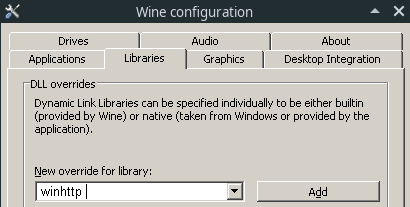

Unix platforms (native games)
On Unix platforms, Steam provides a way to run launch scripts directly before running the original game. The process is similar for both Linux and macOS, but with one key difference.
1. Download and install BepInEx
First, download and install BepInEx binaries if you hadn't done so.
For that, follow steps 1-2 in the [installation guide](Installing BepInEx#installing-bepinex)
Tip
To easily find the game folder of a Steam game, go into properties of the game:
And Select Browse local files from Local files tab:

Note
Don't run the script yet as it will run the game without Steam integration. You don't need to configure the script either, as it will be done by Steam.
2. Set up permissions
On Unix systems, you first need to give the run script permission to run.
At this moment it has to be done manually.
Open the game folder in terminal and add execution permission to run script:
chmod u+x run_bepinex.sh
This will add needed permissions to run BepInEx.
3. Configure Steam to run the script
Finally, configure Steam to run the script.
Open the game's properties on Steam:
Next, click Set launch options button which will open a new window:

Now, change the launch options depending on your OS:
4. Run first time to generate configuration
Finally, run the game via Steam normally. This will generate BepInEx config, but the game might not run.
5. Configure BepInEx to suit your needs.
Open BepInEx/config/BepInEx.cfg in a text editor of your choice.
All options are documented directly in the configuration file.
Additionally, refer to refer to the configuration guide for more information.
Proton/Wine
Note
Instructions on using BepInEx with proton are based on a guide from R2Wiki
Setting up BepInEx with Wine requires primarily configuring the DLL forwarding to work correctly. We strongly recommend to use Proton, but it is not an absolute requirement.
Open winecfg for the target game
With proton the easiest way to do so is via
protontricks
(or similarly with winetricks which is not covered here).
Open the terminal and type
protontricks --gui
Next, select the game you want to configure

Next, in winetricks menu select Select default wineprefix option and press OK:

Finally, select Run winecfg and click OK:

This will open winecfg.
Configure proxy to run
BepInEx relies on winhttp.dll proxy DLL to inject itself into Unity games.
On wine the proxy should be configured manually.
In winecfg, select Libraries tab. Under New override for library dropbox,
select winhttp and Click add:

Finally click Apply and you're done. Running the game should now run BepInEx.